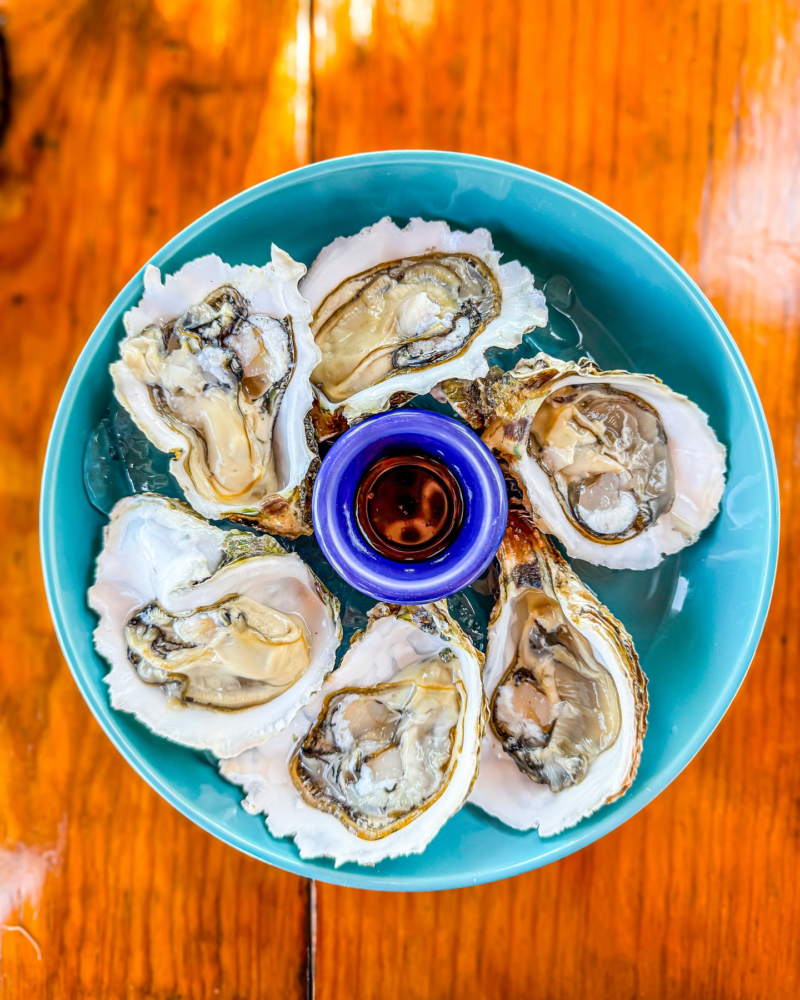
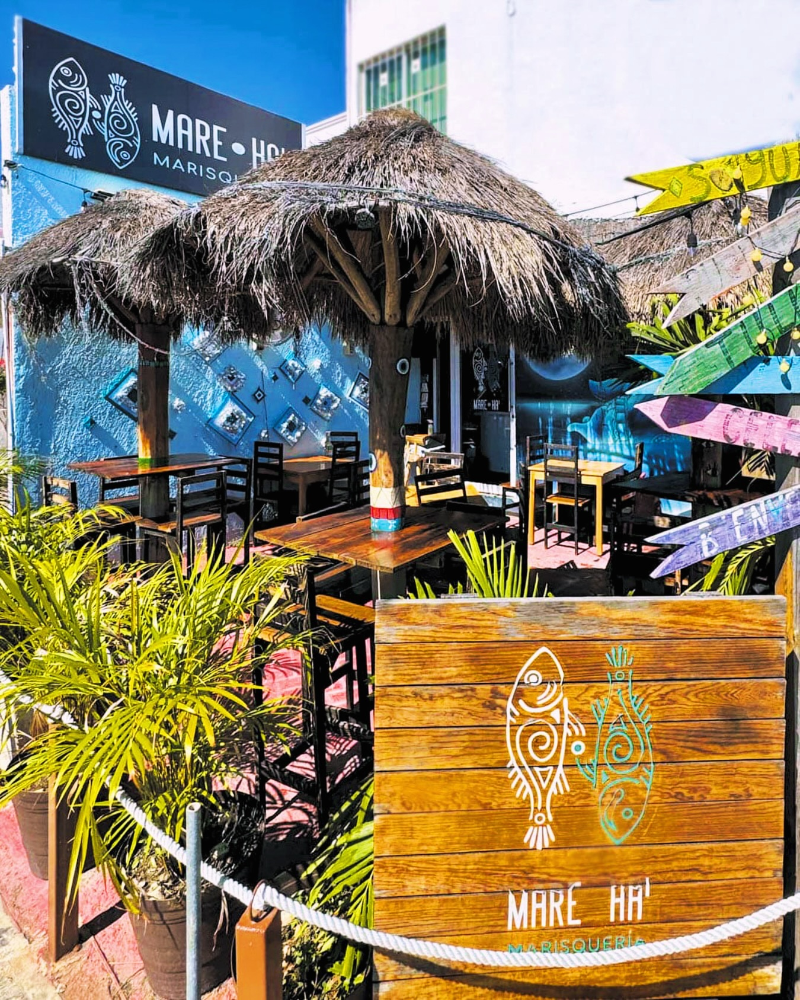
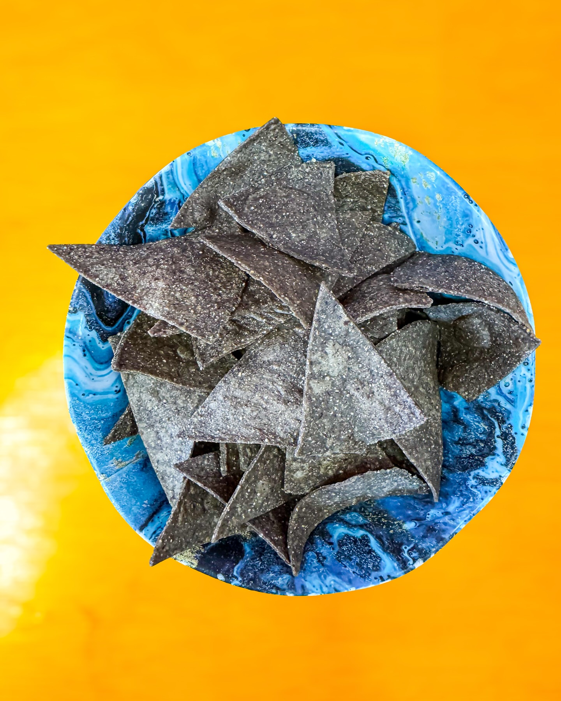
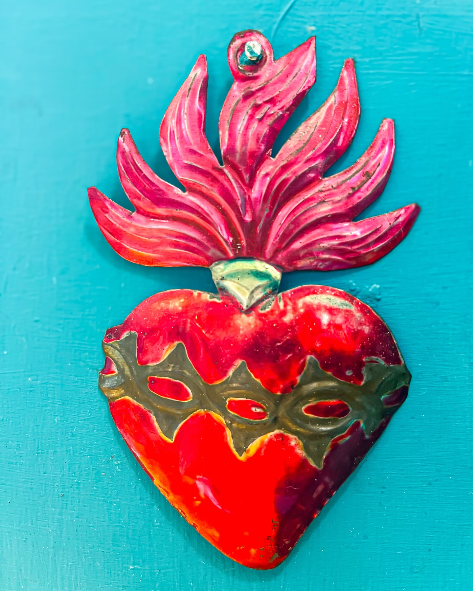
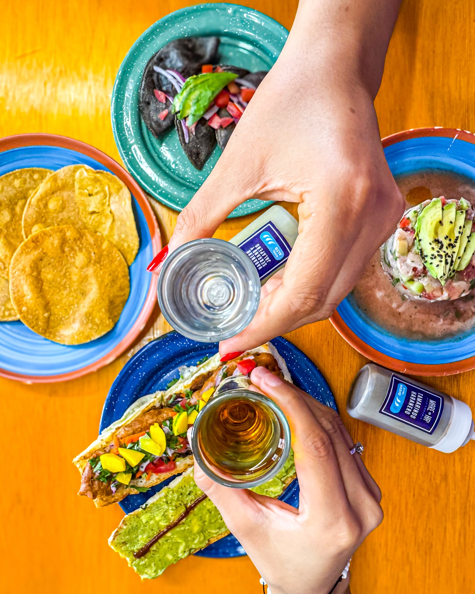

Especialistas en ceviches, aguachiles y la auténtica sazón costeña.

En Mare Ha' creemos que el secreto de un buen platillo está en la calidad de sus ingredientes. Nos enorgullece servir los pescados y mariscos más frescos de la región, preparados al momento con recetas que resaltan el sabor del mar.
Desde nuestros tradicionales tacos al gusto hasta nuestros ceviches, cada bocado está pensado para hacerte sentir la brisa marina sin salir de Mérida.




Calle 41 #287 (L2-X 40), Zona Industrial,
Francisco de Montejo,
97203
Mérida, Yucatán.